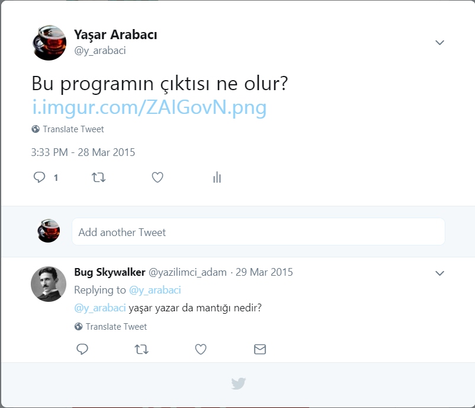

C Programlama Dilinde Array İndeksi ve Pointer Aritmetiği
Üç yıl önce twitter'dan şöyle birşey paylaşmıştım.

Linkteki program şu şekilde;
#include <stdio.h> int main(int argc, char const *argv[]) { printf(&(0x02)["\12\12y%s\0ar arabaci\12\12"], "basar\0ilar diler"+1); return 0; }
Bugün nereden düştüyse, bu program aklıma düştü. Bu program, bana kalırsa, C mülakatlarında kullanılabilecek özellikte bir program. Bu programın çıktısını, derlemeden anlayabilenleri tebrik ediyorum. Eğer anlamadıysanız ve biraz kafa yormak istiyorsanız, yazıyı okumaya bu noktada ara verebilirsiniz.
Bu programda ana fikir, array (veya pointer) indekslemenin, pointer aritmetiği yapmanın kısa yolu olduğu (En. Syntatic Sugar). Örneğin,
char *y = "Yasar" dersek, y değişkeni, 6 elemanlı (string NULL ile sonlandırıldığı için) bir karakter array'inin ilk elemanının
adresini tutar. Bu array üzerinde, y[2] ifadesi ile, *(y+2) ifadesi aynı sonucu doğurur. Aynı fikirden devam edersek, 2[y] ise,
*(2+y) olur. Daha açık söylemek gerekirse, y[2] ile 2[y] ifadeleri aynı görevi görür. Bu bilgiler ışığında, orjinal program ile,
aşağıdaki eşdeğer olur;
#include <stdio.h> int main(int argc, char const *argv[]) { printf(&("\12\12y%s\0ar arabaci\12\12"[0x02]), "basar\0ilar diler"+1); return 0; }
Daha anlaşılır olması için, string literaller yerine, değişken kullanabilir.
#include <stdio.h> int main(int argc, char const *argv[]) { char *s1 = "\12\12y%s\0ar arabaci\12\12"; char *s2 = "basar\0ilar diler"; printf(&(s1[0x02]), s2+1); return 0; }
String üzerinden işlem yapan tüm standart C fonksiyonları gibi, printf fonksiyonu da, bir string'in NULL karakterle bittiğini düşünür. Dolayısıyla,
s1 ve s2 de, NULL karakterden sonrasını silerek, programı daha da sadeleştirebiliriz. Ayrıca, hexadecimal 0x02, decimal olarak 2 eder. İndeksleme
yerine de, pointer aritmetiği kullanabiliriz.
#include <stdio.h> int main(int argc, char const *argv[]) { char *s1 = "\12\12y%s"; char *s2 = "basar"; printf(s1+2, s2+1); return 0; }
s1+2 ve s2+1, s1 değişkenini üçüncü karakterden itibaren, s2 değişkenini de ikinci karakterden itibaren printf fonksiyonuna
gönderiyor. Bunu da sadeleştirebiliriz (\12 ifadesi, ascii kodu 12 olan karakter yerine geçiyor. Yani, \12 tek bir karakter);
#include <stdio.h> int main(int argc, char const *argv[]) { char *s1 = "y%s"; char *s2 = "asar"; printf(s1, s2); return 0; }
Kodlar yeterince sadeleştiğine göre, s1 ve s2 değişkenlerine ihtiyacımız kalmadı.
#include <stdio.h> int main(int argc, char const *argv[]) { printf("y%s", "asar"); return 0; }
Bu programın çıktısı da, kendini belli ediyor. Siz kendinizi nasıl hissedersiniz bilmem ama, ben array indekslemenin tersten de çalıştığını öğrendiğimde, kendimi bir hayli aydınlanmış hissetmiştim.